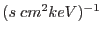

XMM-Newton Science Analysis System
rgsfluxer (rgsfluxer-1.9.2) [xmmsas_20170112_1337-16.0.0]
Output Files
The output file is a table with three or four columns. The first
three are bin center, flux, and error. The bin centers are given in
units of Åor keV depending on the mode: wavelength or
energy respectively. Similarly the flux and error are given in
or
. The fourth column, the
quality flag, is omitted if the quality parameter specifies
uniform quality for all bins. The structure of the file depends upon
the selected output format:
- dal
- A FITS-compliant DAL dataset with the table placed in
an extension named ``FLUXED''. The four columns are:
| CHANNEL |
real32 |
bin center |
| FLUX |
real32 |
observed flux |
| ERROR |
real32 |
statistical uncertainty |
| QUALITY |
int16 |
quality flag |
- ascii
- A plain-text file, beginning with two comment lines
indicated by ``!'' as the first character. The first
line lists the names of the columns and the second
line describes their units. The table follows; its
columns are space-delimited. The name of the first
column is either ``wavelength'' or ``energy''. The
remaining columns are ``flux'', ``error'', and
``quality'', in that order.
- qdp
- A plain-text file, beginning with the qdp directive,
``READ SERR 2''. The rest of the file is structured
in the same way as format=ascii, except that
NaN values are written as ``no'' by default.
XMM-Newton SOC/SSC -- 2017-01-12